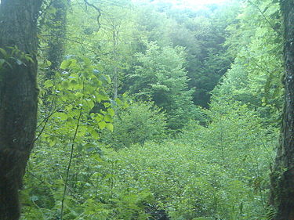

get to know georgia
ბაწარის სახელმწიფო ნაკრძალი — სახელმწიფო ნაკრძალი ახმეტის მუნიციპალიტეტში, მდინარე ალაზნის მარჯვენა მხარეს, მდინარე ბაწარის ხეობაში. შედის ბაწარა-ბაბანეურის დაცული ტერიტორიების შემადგენლობაში.[1] დაარსებულია 1935 წელს. ფართობი 3036 ჰა.[2] ნაკრძალში დაცულია რელიქტური ჯიშის - ურთხელის ხელუხლებელი კორომები, რომლითაც დიდი სამეცნიერო ღირებულება აქვს. გარდა წმინდა კორომებისა, ურთხელი შერეულია წიფლნარში. ტყეში შერეულია აგრეთვე ნეკერჩხალი, იფანი, ცაცხვი და სხვა: ნაკრძალში ტყე კარგადაა დაცული, რაც იმის შედეგიცაა, რომ ადგილობრივ მოსახლეობას ურთხელი წმინდა, ანგელოზის ხედ მიაჩნდა. ბაწარის სახელმწიფო ნაკრძალში ძუძუმწოვრებიდან გვხვდება შველი, კვერნა, წავი, დათვი, მაჩვი, არჩვი და სხვა, ფრინველებიდან - ორბი, არწივი, შაშვი, როჭო და სხვა.
ბაწარის სახელმწიფო ნაკრძალი მდებარეობს მდ. ბაწარის ხეობაში, სოფ. ბირკინიანიდან 1,5კმ-ზე. ნაკრძალს დასავლეთიდან ესაზღვრება წოვათის ქედი, მდ. ილტოს ხეობა, სამხრეთიდან – მდ. დიდი ველტეხისა და მდ. ბაწარის წყალგამყოფი კეხურისგორის ქედი, აღმოსავლეთიდან – წინაგორის ქედი, რომელიც მდ. ალაზანს ებჯინება, ჩრდილოეთიდან – საქისტოს მთა და მისი მიმდებარე მთის მასივი.[2] ამჟამად ბაწარა-ბაბანაურის ტყეში არსებულ უთხოვარის კორომს გერმანელი სპეციალისტები სწავლობენ. მათი დასკვნის შემდეგ, სავარაუდოდ, იუნესკო ბაწარა-ბაბანაურის ტყეს მსოფლიო მემკვიდრეობის ნუსხაში შეიტანს[3].